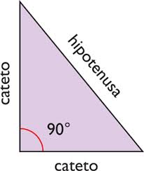

Teorema de Pitagoras
- Cateto Adjacente:
- Cateto Opuesto:
- Hipotenusa:
Acerca del Teorema de Pitágoras
Historia del Teorema de Pitágoras
Tiene este nombre porque su demostración,sobre todo, es esfuerzo de la escuela pitagórica. Anteriormente, en mesopotamia y el Antiguo Egipto se conocían temas de valores que se correspondíancon los lados de un triángulo rectángulo, y se utilizaban para resolver problemas referentes a los citados triángulos, tal como se indica en unas tabillas y papiros. Sin embargo no ha durado ningún
documento que exponga teóricamente su relación.
El Teorema de Pitágoras fue comprobado en el siglo VI a.C por el filósofo y matemático griego Pitágoras,pero se estima que pudo haber sido previo su existencia, o demostrado con otro nombre.
Un triángulo rectángulo es un triángulo que tiene un ángulo recto, es decir de 90º.En un triángulo rectángulo, el lado más grande recibe el nombre de hipotenusa y los otros dos lados se llaman catetos.
- 